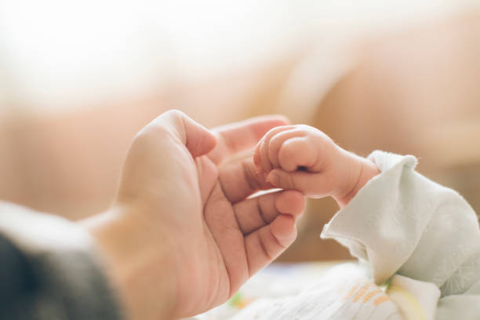

¿QUE OFRECEMOS?
En CEI Pequeños Pasos, ofrecemos una experiencia educativa única, centrada en el respeto mutuo, la autonomía y el desarrollo emocional desde los primeros años. Nuestro enfoque integral incluye Disciplina Positiva, Inteligencia Emocional, y una alimentación saludable, todo en un entorno seguro y lleno de amor. En Pequeños Pasos cada día es una oportunidad para crecer y explorar el mundo con curiosidad y alegría.
ALIMENTACIÓN SALUDABLE
Creamos hábitos de alimentación saludables a diario, tanto en nuestros menús como en nuestro entorno, cuidando nuestro día a día con frutas y verduras frescas, legumbres ecológicas y materias prima de primera calidad, confiando en las mejores manos, y guiados por nutricionistas especializados en niños de 0/3 años.
DISCIPLINA POSITIVA
La Disciplina Positiva es educar desde la amabilidad y la firmeza. Es la alternativa más efectiva, entendida como un recurso para el desarrollo infantil sano, que procura la felicidad y el bienestar de los menores a través del cual los niños aprenden a ser autónomos y responsables. Se basa en el respeto mutuo hijo/padres y otras personas cercanas como maestros, hermanos etc. e implica al niño, sin imponer, pero aportando reglas y normas comunes.
PSICOMOTRICIDAD VIVENCIADA
No les decimos a los niños qué tienen que hacer, cómo o en qué orden. A cambio les ofrecemos un espacio, un tiempo y una observación individualizada, que lo respeta y lo hace evolucionar teniendo en cuenta que cada uno tiene un ritmo diferente y por lo tanto, unas necesidades diferentes.
INTELIGENCIA EMOCIONAL
Las emociones, pueden influenciar nuestra vida en multitud de sentidos. En la Inteligencia emocional en niños, y para poder llegar a comprenderlas mejor, debemos tenerlas presentes en todo momento, siendo los primeros años de vida una etapa crucial para el aprendizaje y manejo de las mismas.